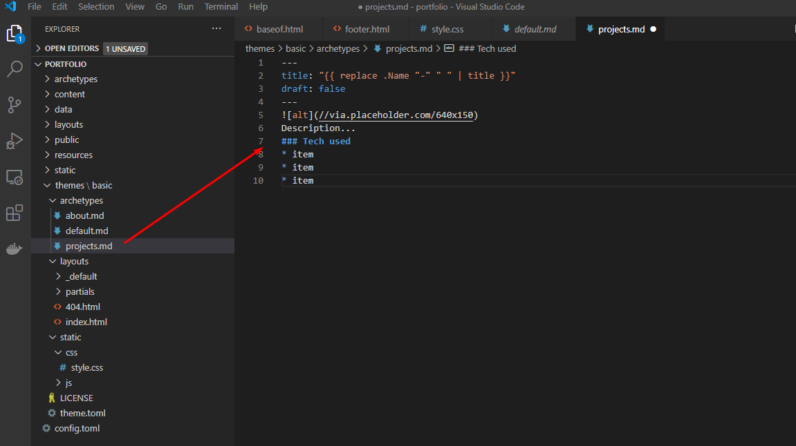
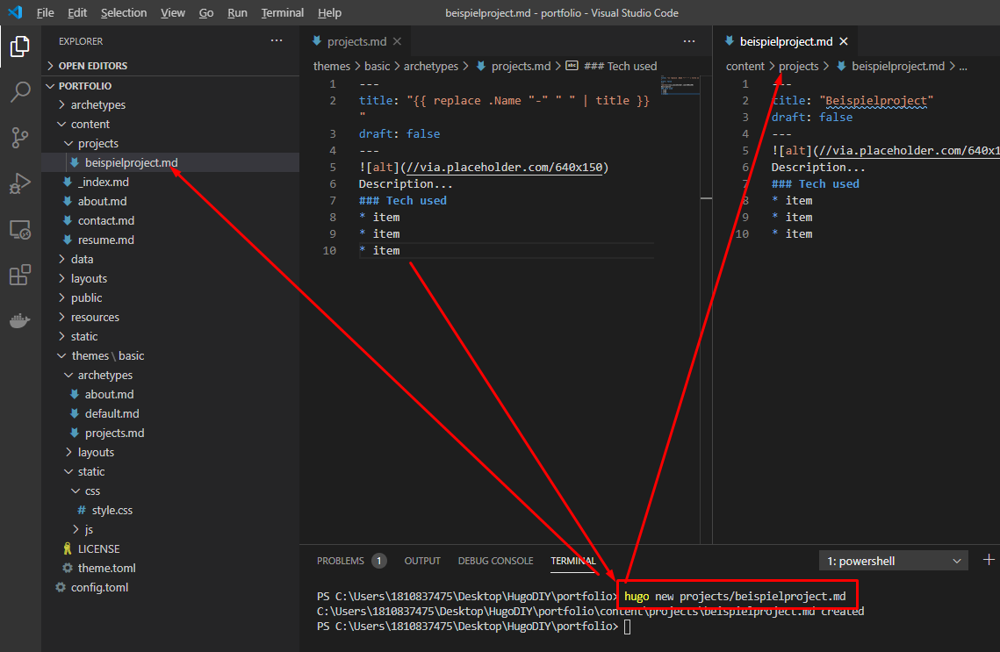

Archtypes
Archtypes sind Vorlagen für bestimmte Seiten-Typen. Archtypes können nach belieben angelegt werden.
Archtypes finden sich sowohl in den Themes als auch in dem normalen Projektfolder.
Erstellen eines neuen Archtypes
- Erstellen der Datei und befüllen mit dem geünschten Inhalt 
- Verwenden einer neuen content seite mit dem Archtype

- Die Seite ist auch direkt in der lokalen Entwicklung unter > http://127.0.0.1:1313/projects/beispielproject/
erreichbar
und nun ist die Beispielseite hinterlegt
Zusammenfassung Mit Archtypes gibt es Vorlagen, die dabei helfen schnell und effizient Inhalte nach einem bestimmten Muster aufzubereiten